14 Adventures in Covariance
14.1 Varying slopes by construction
ランダム切片とランダム傾きの両方を推定するためには、多変量正規分布を用いる必要がある。
14.1.1 Simulate and population
ロボットがカフェを訪れた際の待ち時間に関するデータをシミュレートする。パラメータは以下のとおりとする。すなわち、ランダム切片とランダム傾きは平均と標準偏差がそれぞれ3.5と-1, 1と0.7の多変量正規分布から得られるとする。なお、分散共分散行列は通常以下のようにあらわす。なお、\(\sigma_{\alpha}\)と\(\sigma_{\beta}\)はそれぞれランダム切片とランダム傾きのばらつき（標準偏差）を表し、\(\rho\)はそれらの相関を表す。
\[ \sum = \begin{bmatrix} \sigma_{\alpha}^2 & \sigma_{\alpha}\sigma_{\beta}\rho\\ \sigma_{\alpha}\sigma_{\beta}\rho & \sigma_{\beta} \end{bmatrix} \]
a <- 3.5 # averange morning wait time
b <- (-1) # average difference afternoon wait time
sigma_a <- 1 # std dev in intercepts
sigma_b <- 0.5 # std dev in slopes
rho <- (-0.7) # correlation between interecpts and slopes
mu <- c(a,b)
cov_ab <- sigma_a*sigma_b*rho #共分散
sigma <- matrix(c(sigma_a^2, cov_ab,
cov_ab, sigma_b^2), ncol=2) # 分散共分散行列なお、分散共分散行列は以下のようにしても作成できる。
sigmas <- c(sigma_a, sigma_b)
rho <- matrix(c(1, rho,
rho, 1), nrow =2)
sigma <- diag(sigmas) %*% rho %*% diag(sigmas) それでは、それぞれのお店（N=20）の切片と傾きをシミュレートする。
n_cafes <- 20
set.seed(5)
vary_effects <-
MASS::mvrnorm(n_cafes, mu, sigma) %>%
data.frame() %>%
set_names("a_cafe", "b_cafe")
head(vary_effects)## a_cafe b_cafe
## 1 4.223962 -1.6093565
## 2 2.010498 -0.7517704
## 3 4.565811 -1.9482646
## 4 3.343635 -1.1926539
## 5 1.700971 -0.5855618
## 6 4.134373 -1.1444539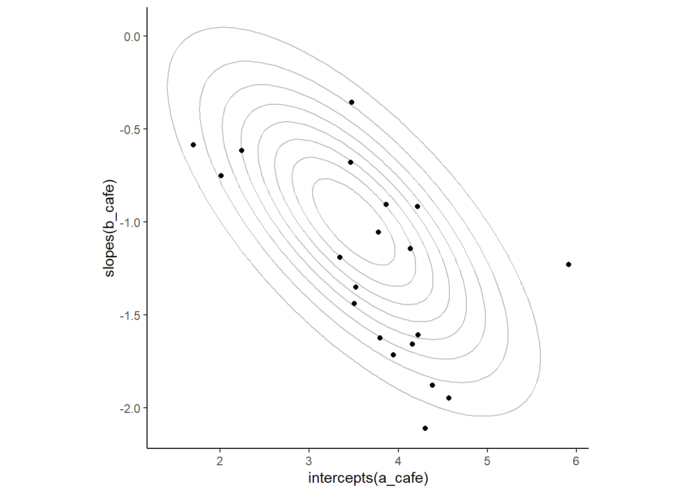
14.1.2 Simulate observation
それでは、それぞれのお店を10回訪れたときのデータをシミュレートする。
n_visits <- 10
sigma_y <- 0.5
set.seed(22)
d <-
vary_effects %>%
mutate(cafe = 1:n()) %>%
tidyr::expand(nesting(cafe, a_cafe, b_cafe),
visits = 1:n_visits) %>%
mutate(afternoon = rep(0:1, times = n()/2)) %>%
mutate(mu = a_cafe + b_cafe*afternoon) %>%
mutate(wait = rnorm(n=n(), mean=mu, sd=sigma_y))
d %>%
slice_sample(n=10)## # A tibble: 10 × 7
## cafe a_cafe b_cafe visits afternoon mu wait
## <int> <dbl> <dbl> <int> <int> <dbl> <dbl>
## 1 2 2.01 -0.752 4 1 1.26 1.22
## 2 14 3.51 -1.44 10 1 2.07 2.98
## 3 10 3.47 -0.680 5 0 3.47 3.67
## 4 20 3.77 -1.06 10 1 2.72 3.63
## 5 4 3.34 -1.19 1 0 3.34 3.61
## 6 13 4.30 -2.11 4 1 2.19 1.21
## 7 5 1.70 -0.586 1 0 1.70 1.59
## 8 10 3.47 -0.680 3 0 3.47 3.69
## 9 1 4.22 -1.61 4 1 2.61 2.76
## 10 17 4.22 -0.919 5 0 4.22 4.08実際のデータをカフェ2とカフェ8について描写してみる。
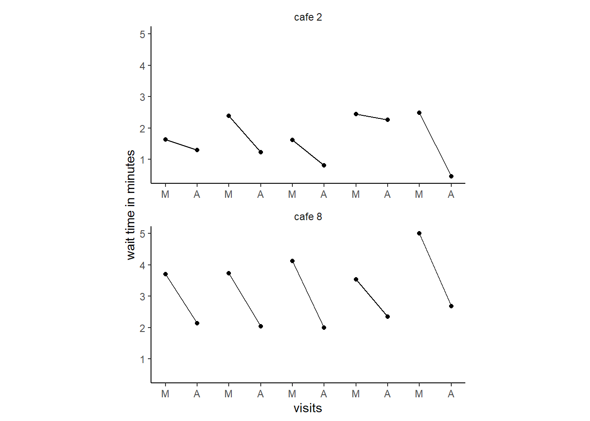
14.1.3 The varying slope model
それでは、モデリングを行う。モデル式は以下の通り。
\[ \begin{aligned} W_{i} &\sim Normal(\mu_{i}, \sigma)\\ \mu_{i} &= \alpha_{cafe[i]} + \beta_{cafe[i]}A_{i}\\ \begin{bmatrix} \alpha_{cafe} \\ \beta_{cafe} \end{bmatrix} &\sim MVNormal( \begin{bmatrix} \alpha \\ \beta \end{bmatrix}, \mathbf{S})\\ \mathbf{S} &= \begin{bmatrix} \sigma_{\alpha} & 0 \\ 0 & \sigma_{\beta} \end{bmatrix} \mathbf{R} \begin{bmatrix} \sigma_{\alpha} & 0 \\ 0 & \sigma_{\beta} \end{bmatrix}\\ \mathbf{R} &= \begin{bmatrix} 1 & \rho \\ \rho & 1 \end{bmatrix}\\ \alpha &\sim Normal(5,2)\\ \beta &\sim Normal(-1,0.5)\\ \sigma &\sim Exponential(1)\\ \sigma_{\alpha} &\sim Exponential(1)\\ \sigma_{\beta} &\sim Exponential(1)\\ mathbf{R} &\sim LKJcorr(2)\\ \end{aligned} \]
なお、\(LKJcorr\)分布は以下のようなパラメータ\(\eta\)を持つ分布である。\(\eta=1\)のときは一様分布で、\(\eta\)が大きくなるほど分布が狭くなっていく。
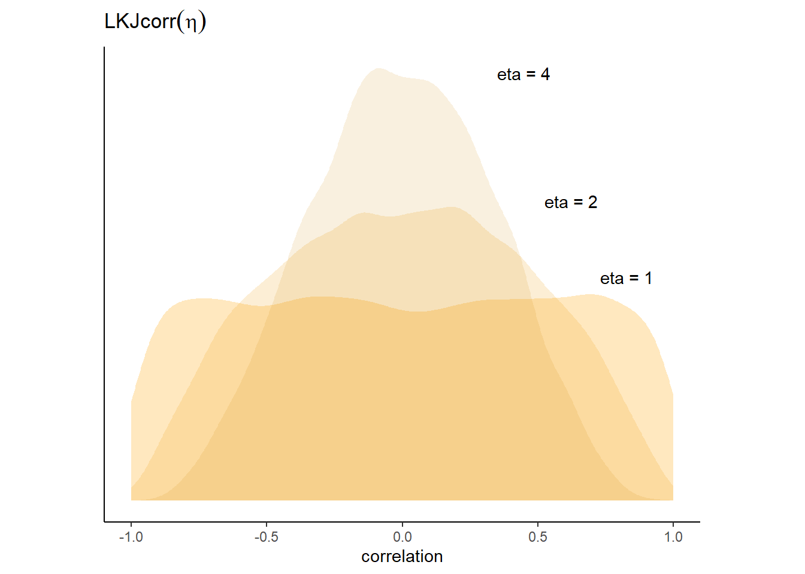
それでは、モデリングを行う。
b14.1 <-
brm(data =d,
family = gaussian,
wait ~ 1 + afternoon + (1+afternoon|cafe),
prior = c(prior(normal(5,2), class = Intercept),
prior(normal(-1,0.5), class = b),
prior(exponential(1), class = sigma),
prior(exponential(1), class =sd),
prior(lkj(2), class = cor)),
backend = "cmdstanr",
seed = 155, file = "output/Chapter14/b14.1")切片と傾きの相関の事前分布と事後分布は以下の通り。
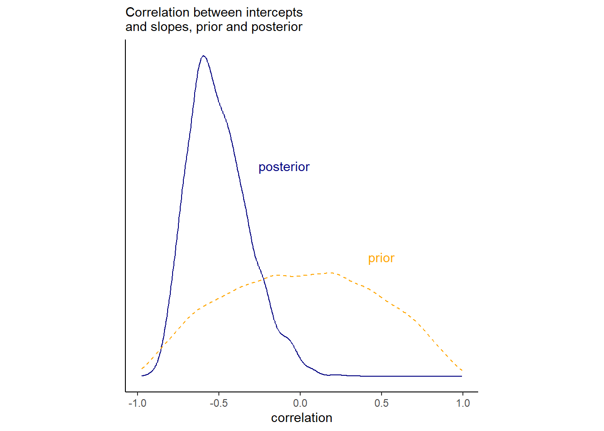
各カフェの切片と傾きの推定値と元データを比較したものが以下の図である。モデルによる推定値では全体の平均へと縮合が起きていることが分かる。
続いて、午前と午後の待ち時間の元データとモデルによる推定値は以下の通り。同様に縮合が生じていることが分かる。
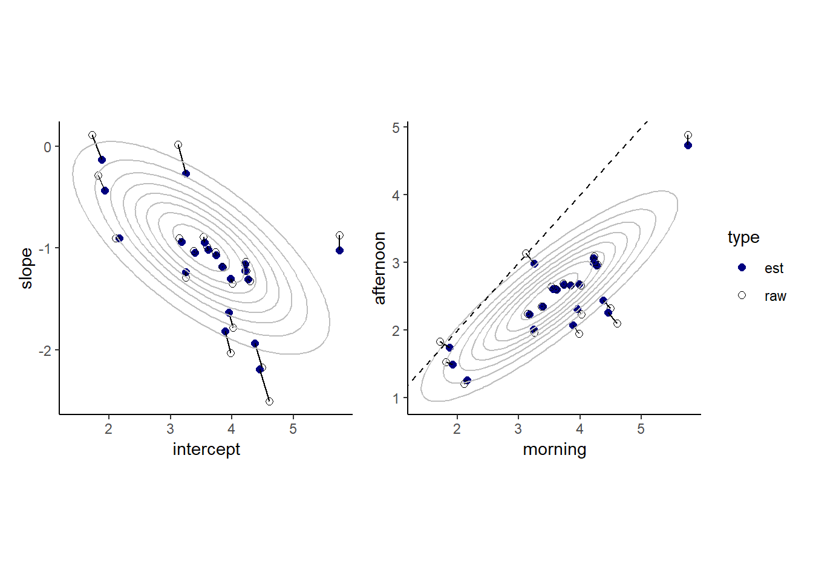
14.2 Advanced varing slopes
チンパンジーの実験データ(Silk et al. 2005)を用いて、2つ以上ランダム傾きを用いるモデルを考える。
data(chimpanzees)
d2 <- chimpanzees
d2 <-
d2 %>%
mutate(actor = factor(actor),
block = factor(block),
treatment = factor(1+prosoc_left + 2*condition),
labels = factor(treatment, levels =1:4,
labels = c("r/n","l/n","r/p","l/p")))モデル式は以下のようになる。以下のモデルでは、各個体、各ブロックによって条件（treatment）の効果が変わることを想定している。
\[
\begin{aligned}
L_{i} &\sim Binomial(1,p_{i})\\
logit(p_{i}) &= \gamma_{TID[i]} + \alpha_{ACTOR[i],TID[i]}+
\beta_{BLOCK[i],TID[i]}\\
\gamma_{j} &\sim Normal(0,1)\\
\begin{bmatrix}
\alpha_{j,1}\\ \alpha_{j,2}\\ \alpha_{j,3}\\ \alpha_{j,4}
\end{bmatrix}
& \sim MVNormal(
\begin{bmatrix}
0\\0\\0\\0
\end{bmatrix}
, \sum_{ACTOR})\\
\begin{bmatrix}
\beta_{j,1}\\ \beta_{j,2}\\ \beta_{j,3}\\ \beta_{j,4}
\end{bmatrix}
& \sim MVNormal(
\begin{bmatrix}
0\\0\\0\\0
\end{bmatrix}
, \sum_{BLOCK})\\
\sum_{ACTOR} &= \mathbf{S}_{\alpha}\mathbf{R}_{\alpha}\mathbf{S}_{\alpha}\\
\sum_{BLOCK} &= \mathbf{S}_{\beta}\mathbf{R}_{\beta}\mathbf{S}_{\beta}\\
\mathbf{S}_{\alpha} &=
\begin{bmatrix}
\sigma_{\alpha,[1]}&0&0&0\\
0&\sigma_{\alpha,[2]}&0&0\\
0&0&\sigma_{\alpha,[3]}&0\\
0&0&0&\sigma_{\alpha,[4]}
\end{bmatrix}\\
\mathbf{S}_{\beta} &=
\begin{bmatrix}
\sigma_{\beta,[1]}&0&0&0\\
0&\sigma_{\beta,[2]}&0&0\\
0&0&\sigma_{\beta,[3]}&0\\
0&0&0&\sigma_{\beta,[4]}
\end{bmatrix}\\
\mathbf{R}_{\alpha} &=
\begin{bmatrix}
1&\rho_{\alpha,[1,2]} & \rho_{\alpha,[1,3]} & \rho_{\alpha,[1,4]}\\
\rho_{\alpha,[2,1]} & 1 &\rho_{\alpha,[2,3]} & \rho_{\alpha,[2,4]}\\
\rho_{\alpha,[3,1]} & \rho_{\alpha,[3,2]} & 1 & \rho_{\alpha,[3,4]}\\
\rho_{\alpha,[4,1]} & \rho_{\alpha,[4,2]} & \rho_{\alpha,[4,3]} & 1\\
\end{bmatrix}\\
\mathbf{R}_{\beta} &=
\begin{bmatrix}
1&\rho_{\beta,[1,2]} & \rho_{\beta,[1,3]} & \rho_{\beta,[1,4]}\\
\rho_{\beta,[2,1]} & 1 &\rho_{\beta,[2,3]} & \rho_{\beta,[2,4]}\\
\rho_{\beta,[3,1]} & \rho_{\beta,[3,2]} & 1 & \rho_{\beta,[3,4]}\\
\rho_{\beta,[4,1]} & \rho_{\beta,[4,2]} & \rho_{\beta,[4,3]} & 1\\
\end{bmatrix}\\
\sigma_{\alpha,[1]},...\sigma_{\alpha,[4]} &\sim Exponential(1)\\
\sigma_{\beta,[1]},...\sigma_{\beta,[4]} &\sim Exponential(1)\\
\mathbf{R}_{\alpha} &\sim LKJ(2)\\
\mathbf{R}_{\beta} &\sim LKJ(2)
\end{aligned}
\]
それでは、brmsでモデルを回す。
b14.3 <-
brm(data =d2,
family = bernoulli,
pulled_left ~ 0 + treatment + (0+treatment|actor) +
(0+treatment|block),
prior = c(prior(normal(0,1), class = b),
prior(exponential(1), class = sd),
prior(lkj(2), class = cor)),
backend = "cmdstanr",
seed = 123, file = "output/Chapter14/b14.3")ランダム切片の標準偏差は以下の通り（表14.1）。
posterior_summary(b14.3) %>%
data.frame() %>%
rownames_to_column(var = "par") %>%
filter(str_detect(par,"sd")) %>%
kable(digits = 2,
booktabs = TRUE,
caption = "b14.3の結果。") %>%
kable_styling(latex_options = c("striped", "hold_position"))| par | Estimate | Est.Error | Q2.5 | Q97.5 |
|---|---|---|---|---|
| sd_actor__treatment1 | 1.40 | 0.49 | 0.70 | 2.62 |
| sd_actor__treatment2 | 0.92 | 0.42 | 0.33 | 1.94 |
| sd_actor__treatment3 | 1.86 | 0.58 | 1.02 | 3.27 |
| sd_actor__treatment4 | 1.60 | 0.63 | 0.74 | 3.15 |
| sd_block__treatment1 | 0.42 | 0.33 | 0.01 | 1.25 |
| sd_block__treatment2 | 0.42 | 0.34 | 0.02 | 1.27 |
| sd_block__treatment3 | 0.30 | 0.27 | 0.01 | 0.99 |
| sd_block__treatment4 | 0.48 | 0.38 | 0.02 | 1.37 |
結果を図示すると以下の通り。青い点は実データを表す。以前のモデルよりも、個体ごとのばらつきをうまく表現することができている。また、縮合が生じていることも分かる（特にactor2）。また、標準偏差が小さかった条件（treatment1と2）でより縮合が生じていることも分かる。 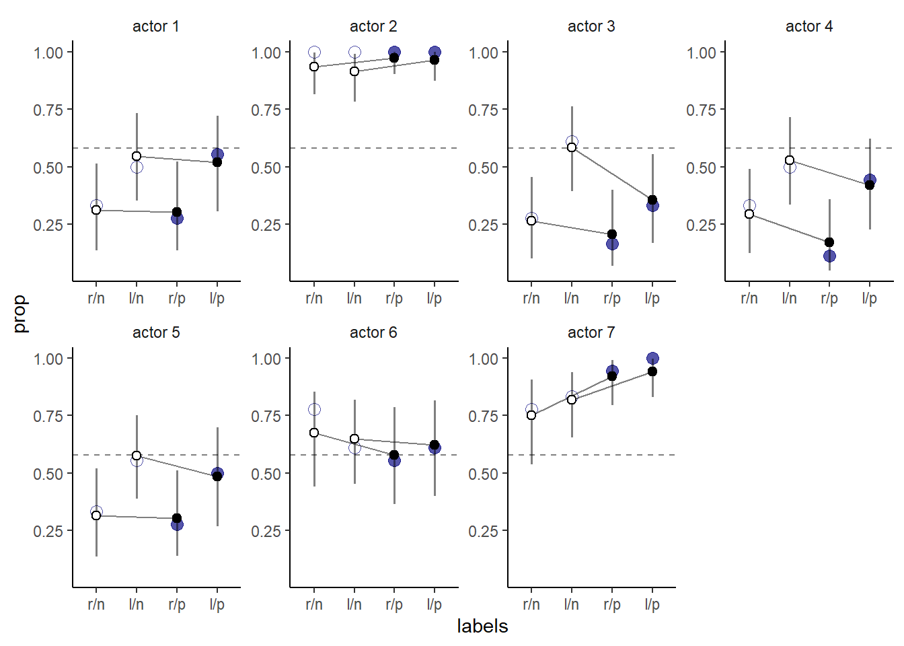
14.3 Instruments and causal designs
14.3.1 Instrumental variables
教育が賃金に与える影響を検証したいとする。しかし、単に賃金を教育の程度で回帰したとしても、その因果関係を知ることはできない。例えば、両方に対して影響を与えている共通の要因が考えられるからである（下図）。
このようなとき、以下の基準を満たすinstrumental variableを用いることでこのような状況を克服することができることがある。
- Uとは独立（\(U\bot Q\)）
- Eと独立でない（\(E\not\bot Q\)）
- QはEを通してのみWに影響を与える。
そのようなQをDAGで表すと以下のようになる。例えば、この例では生まれたのがいずれの四半期にあたるのかをQとして用いることができるかもしれない(Angrist and Keueger 1991)。これは、早く生まれた人ほど学校教育を受けない傾向があることによる。このとき、QとEを同時に説明変数に含めるとEで条件づけるとQとUが独立ではなくなり（EはQとUの合流点であるため）、結果的にQとWも独立ではなくなる。その結果、さらにEの係数が交絡するので、Qは\(\color{blue}{\text{BIAS AMPLIFIER}}\)と呼べる。
それでは、上のDAGに基づいてデータをシミュレートする。ここでは、教育による収入への影響はないものとする。
set.seed(73)
n <- 500
dat_sim <-
tibble(u_sim = rnorm(n,mean=0,sd=1),
q_sim = sample(1:4, size=n, replace=TRUE)) %>%
mutate(e_sim = rnorm(n, mean=u_sim + q_sim, sd=1),
w_sim = rnorm(n, mean=u_sim + 0*e_sim, sd =1)) %>%
mutate(w = standardize(w_sim),
e = standardize(e_sim),
q = standardize(q_sim))
head(dat_sim)## # A tibble: 6 × 7
## u_sim q_sim e_sim w_sim w e q
## <dbl> <int> <dbl> <dbl> <dw_trnsf> <dw_trnsf> <dw_trnsf>
## 1 -0.145 1 1.51 0.216 0.17252701 -0.57472658 -1.3562176
## 2 0.291 1 0.664 0.846 0.58357373 -1.08822480 -1.3562176
## 3 0.0938 3 2.44 -0.664 -0.40238235 -0.01850495 0.4282792
## 4 -0.127 3 4.09 -0.725 -0.44241750 0.97829629 0.4282792
## 5 -0.847 4 2.62 -1.24 -0.78028083 0.09392642 1.3205276
## 6 0.141 4 3.54 -0.0700 -0.01457435 0.65088153 1.3205276それでは、モデリングを行う。まずは、Qを含めないモデル。
b14.4 <-
brm(data = dat_sim,
family = gaussian,
w ~ 1 + e,
prior = c(prior(normal(0, 0.2), class = Intercept),
prior(normal(0, 0.5), class = b),
prior(exponential(1), class = sigma)),
backend = "cmdstanr",
seed =14, file = "output/Chapter14/b14.4"
)結果は以下の通り（表14.2）。教育の影響はないにもかかわらず、交絡によって係数が正になっていることが分かる。
posterior_summary(b14.4) %>%
data.frame() %>%
rownames_to_column(var = "par") %>%
filter(par != "lp__") %>%
kable(digits = 2,
booktabs = TRUE,
caption = "b14.4の結果") %>%
kable_styling(latex_options = c("striped", "hold_position"))| par | Estimate | Est.Error | Q2.5 | Q97.5 |
|---|---|---|---|---|
| b_Intercept | 0.00 | 0.04 | -0.08 | 0.08 |
| b_e | 0.40 | 0.04 | 0.32 | 0.48 |
| sigma | 0.92 | 0.03 | 0.86 | 0.98 |
| lprior | -0.80 | 0.08 | -0.96 | -0.66 |
続いて、Qを含めたモデルを考える。
b14.5 <-
brm(data = dat_sim,
family = gaussian,
w ~ 1 + e + q,
prior = c(prior(normal(0, 0.2), class = Intercept),
prior(normal(0, 0.5), class = b),
prior(exponential(1), class = sigma)),
backend = "cmdstanr",
seed =14, file = "output/Chapter14/b14.5"
)| par | Estimate | Est.Error | Q2.5 | Q97.5 |
|---|---|---|---|---|
| b_Intercept | 0.00 | 0.04 | -0.08 | 0.07 |
| b_e | 0.64 | 0.05 | 0.55 | 0.73 |
| b_q | -0.41 | 0.05 | -0.50 | -0.31 |
| sigma | 0.86 | 0.03 | 0.80 | 0.91 |
| lprior | -1.78 | 0.18 | -2.15 | -1.46 |
Qを用いて正しい因果関係を推定するためには、以下のような多変量モデルを作成すればよい。このモデルではWとEの残差に相関がある可能性があることを示しており（これは、Uが交絡要因となっているため）、これが5章で扱ったモデルとは異なる。なお、Uを欠損値として代入する方法もあるが、それについては次の章で学ぶ。
\[
\begin{aligned}
\begin{bmatrix}
W_{i}\\E_{i}
\end{bmatrix}
&\sim MVNorm(
\begin{bmatrix}
\mu_{W,i}\\
\mu_{E,i}
\end{bmatrix}
, \mathbf{\sum})\\
\mu_{W,i} &= \alpha_{W} + \beta_{EW}E_{i}\\
\mu_{E,i} &= \alpha_{E} + \beta_{QW}Q_{i}\\
\mathbf{\sigma} &= \begin{bmatrix}
\sigma_{W}&0\\0&\sigma_{E}
\end{bmatrix}
\mathbf{R}
\begin{bmatrix}
\sigma_{W}&0\\0&\sigma_{E}
\end{bmatrix}\\
\mathbf{R} &= \begin{bmatrix}
1&\rho\\ \rho&1
\end{bmatrix}\\
\alpha_{W}, \alpha_{E} &\sim Normal(0,0.2)\\
\beta_{EW}. \beta_{QE} &\sim Normal(0,0.5)\\
\sigma_{W}, \sigma_{W} &\sim Exponential(1)\\
\rho &\sim LKJcorr(2)
\end{aligned}
\]
brmsでモデリングする。
e_model <- bf(e ~ 1+q)
w_model <- bf(w ~ 1+e)
b14.6 <-
brm(data = dat_sim,
family = gaussian,
e_model + w_model + set_rescor(TRUE),
prior = c(prior(normal(0, 0.2), class = Intercept,resp = e),
prior(normal(0, 0.5), class = b, resp = e),
prior(exponential(1), class = sigma, resp = e),
prior(normal(0, 0.2), class = Intercept,resp = w),
prior(normal(0, 0.5), class = b, resp = w),
prior(exponential(1), class = sigma, resp = w),
prior(lkj(2), class = rescor)),
backend = "cmdstanr",
seed = 14, file = "output/Chapter14/b14.6")| par | Estimate | Est.Error | Q2.5 | Q97.5 |
|---|---|---|---|---|
| b_e_Intercept | 0.00 | 0.04 | -0.07 | 0.07 |
| b_w_Intercept | 0.00 | 0.05 | -0.09 | 0.09 |
| b_e_q | 0.59 | 0.04 | 0.52 | 0.66 |
| b_w_e | -0.05 | 0.08 | -0.20 | 0.10 |
| sigma_e | 0.81 | 0.02 | 0.76 | 0.86 |
| sigma_w | 1.02 | 0.05 | 0.94 | 1.12 |
| rescor__e__w | 0.54 | 0.05 | 0.43 | 0.64 |
| lprior | -2.29 | 0.14 | -2.59 | -2.04 |
それでは、今度は教育による効果があるというデータをシミュレートする。
set.seed(73)
n <- 500
dat_sim2 <-
tibble(u_sim = rnorm(n,mean=0,sd=1),
q_sim = sample(1:4, size=n, replace=TRUE)) %>%
mutate(e_sim = rnorm(n, mean=u_sim + q_sim, sd=1),
w_sim = rnorm(n, mean=-u_sim + 0.2*e_sim, sd =1)) %>%
mutate(w = standardize(w_sim),
e = standardize(e_sim),
q = standardize(q_sim))
head(dat_sim2)## # A tibble: 6 × 7
## u_sim q_sim e_sim w_sim w e q
## <dbl> <int> <dbl> <dbl> <dw_trnsf> <dw_trnsf> <dw_trnsf>
## 1 -0.145 1 1.51 0.809 0.24777771 -0.57472658 -1.3562176
## 2 0.291 1 0.664 0.396 -0.05626233 -1.08822480 -1.3562176
## 3 0.0938 3 2.44 -0.364 -0.61500793 -0.01850495 0.4282792
## 4 -0.127 3 4.09 0.347 -0.09215742 0.97829629 0.4282792
## 5 -0.847 4 2.62 0.976 0.37002007 0.09392642 1.3205276
## 6 0.141 4 3.54 0.357 -0.08516221 0.65088153 1.3205276それでは、同様に3つのモデリングを行う。
b14.4x <- update(b14.4,
newdata = dat_sim2,
seed =14, file = "output/Chapter14/b14.4x")
b14.5x <- update(b14.5,
newdata = dat_sim2,
seed =14, file = "output/Chapter14/b14.5x")
b14.6x <- update(b14.6,
newdata = dat_sim2,
seed =14, file = "output/Chapter14/b14.6x")推定値を図示すると以下のようになる。やはり3つめのモデルでうまく推定ができたことが分かる。また、EとQの残差の相関は負になっている。これは、UがWには正に影響し、Eには負に影響していたからである。
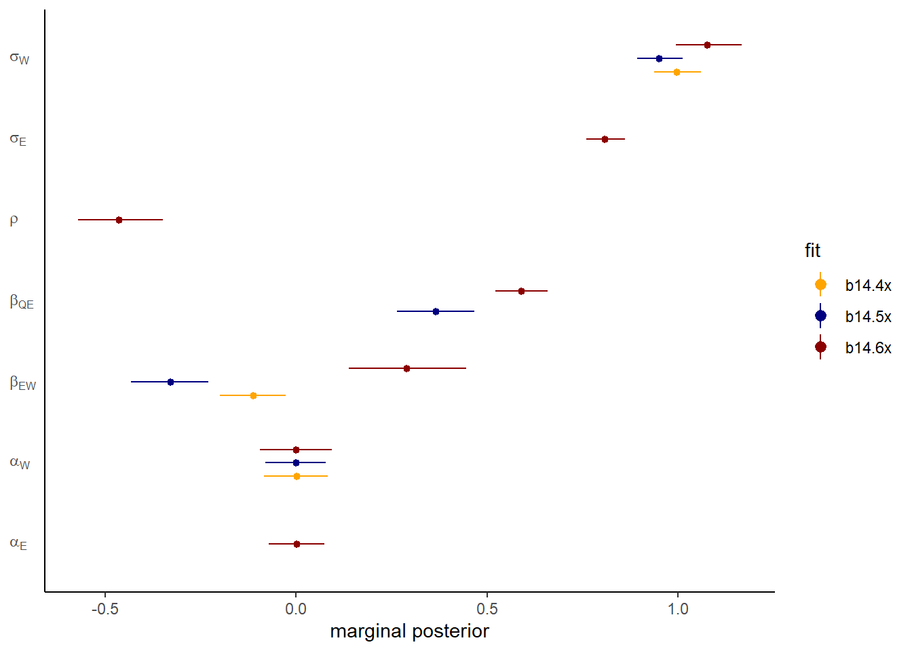
dagittyパッケージにはDAG内でinstrumental variableがあるか判定してくれる関数が存在する。
library(dagitty)
dagIV <- dagitty("dag{Q -> E <- U -> W <- E}")
instrumentalVariables(dagIV, exposure = "E", outcome = "W")## Q現実的にはある変数がinstrumental variableかを判断することは難しい。背景となる科学的な知識に基づいて判断することが重要である。
14.3.2 Other designs
14.3.2.1 Front door criterion
以下のようなDAGがあるとする。もしXとYの因果関係を調べたいとする。もし、Zが確実にYに影響を与えているとすれば、フロントドア基準が用いて因果関係を推定することができる。
例として、大学で形成された社会的紐帯と上院における投票行動の関連を分析した研究がある(Cohen and Malloy 2014)。上院では隣の座席になった人同士で同じような投票行動をとる可能性が高いと考えられるが、席順はランダムに割り振られる。よって、席順と出身大学は同じ要因から影響を受けていないといえる。よって、もし座席が隣同士でかつ同じ出身大学の人が座席が隣でかつ同じ出身大学でない人よりも同じような投票行動をするとき、出身大学が同じであることが投票行動に影響しているということができる。
14.5 Continuous categories and the Gaussian process
ここまでは、ランダム効果は順序のない、不連続なカテゴリーに対して適応されていた。もし、連続的なカテゴリー（年齢、身長、収入など）をランダム効果に組み込む場合にはどうすればよいだろうか？
このような場合に用いることができるのがガウス過程回帰（Gaussian process regression）である。
14.5.1 Example: Spatial autocorrelation in Oceanic tools
11章でオセアニア諸国の道具数についてモデリングを行ったとき、他国との交渉頻度を低いか高いかの2カテゴリーに分類した。しかし、このモデルでは、交渉相手国がどの国なのか（小さい国なのか大きい国なのか）が考慮されていない。また、道具が各国間で交換されているのであれば、各国の道具数は独立ではないという問題点もある。また、各国の地理的距離（近い国ほど同じような素材がある）も考慮する必要がある。 以上から、各国間の地理的距離を考慮したモデルを考える必要がある。ガウス過程モデルではモデルに各国の距離マトリックスを組み込むことでこれを実現する。
data("islandsDistMatrix")
d_mat <- islandsDistMatrix
colnames(d_mat) <- c("Ml", "Ti", "SC", "Ya", "Fi", "Tr", "Ch", "Mn", "To", "Ha")各国間の距離は以下の通り。
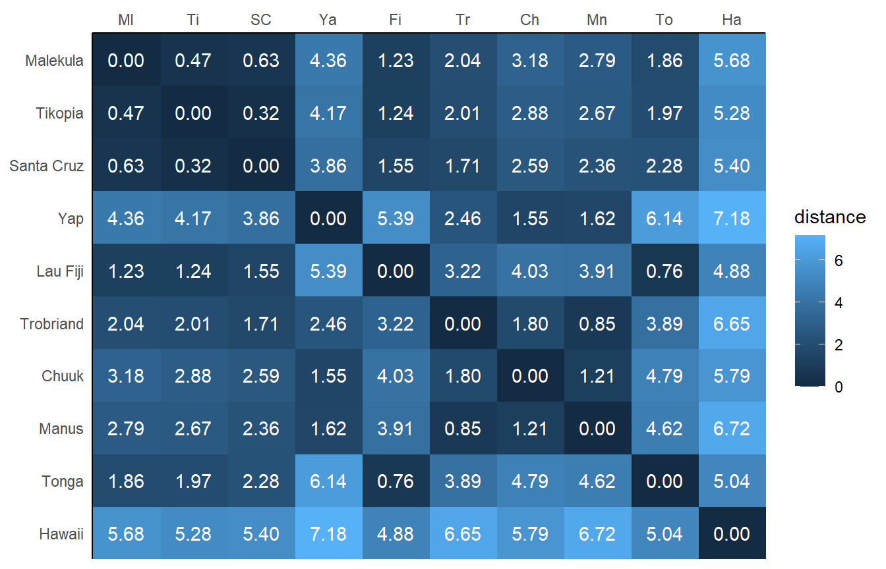
モデル式は以下の通り。距離マトリックスをランダム切片に加える。
\[
\begin{aligned}
T_{i} &\sim Poisson(\lambda_{i})\\
\lambda_{i} &= exp(k_{society[i]})\alpha P^{\beta}_{i}/ \gamma\\
\begin{pmatrix}
k_{1}\\k_{2}\\k_{3}\\...\\k_{10}
\end{pmatrix}
&\sim Normal
\begin{pmatrix}
\begin{pmatrix}
0\\0\\0\\...\\0
\end{pmatrix},
\mathbf{K}
\end{pmatrix}\\
\mathbf{K_{ij}} &= \eta^2 exp(\rho^2D^2_{ij}) + \delta_{ij}\sigma^2\\
\end{aligned}
\]
なお、\(K_{ij}\)は国\(i\)と国\(j\)の共分散を表す。\(D_{ij}\)は国間の距離なので、\(K_{ij}\)は国家間の距離の二乗が大きくなるほど共分散は小さくなる。\(\rho\)はこの減少の速度を表す。距離の二乗を用いたのは、それが実際の共分散の減少をよりよく表していると考えられるためである。下図は、\(D_{ij}\)に応じて\(K_ij\)がどのように変化するかを示したものである。
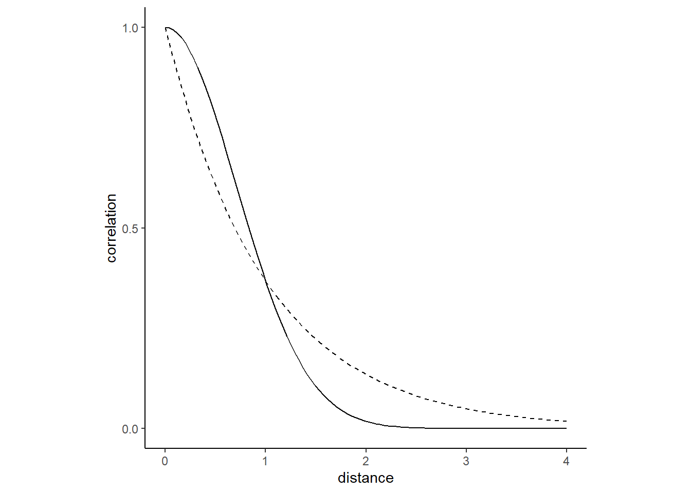
\(\eta^2\)は最大の共分散を、\(\delta_{ij}\sigma^2\)は\(i =j\)のときの共分散の追加分を示す。\(\delta_{ij}\)は\(i=j\)のときに1、それ以外のときに0をとる関数で、\(\sigma\)は国内のばらつきを示す。今回は各国につき1つしかデータがないので関係ない。\(\eta^2\)と\(\rho^2\)の事前分布を以下のとおりとする。
\[
\begin{aligned}
\eta^2 &\sim Exponential(2)\\
\rho^2 &\sim Exponential(0.5)
\end{aligned}
\]
brmsパッケージでは、gp()を用いることでガウス過程を扱うことができる。この関数内では、各国の緯度と経度を用いて\(D_{ij}\)を算出する。scale = TRUEは\(D_{ij}\)の最大値を1とする。今回はFALSEにする。データ上の緯度と経度は十進角（decimal degree）で記されているのでkmに直すために0.11132をかける。
data("Kline2")
d4 <- Kline2 %>%
mutate(lat_adj = lat*0.11132,
lon2_adj = lon2*0.11132)
d4 %>%
dplyr::select(culture, lat, lon2, lat_adj:lon2_adj) %>%
kable(booktabs = TRUE,
digits =2) %>%
kable_styling(latex_options = "striped")| culture | lat | lon2 | lat_adj | lon2_adj |
|---|---|---|---|---|
| Malekula | -16.3 | -12.5 | -1.81 | -1.39 |
| Tikopia | -12.3 | -11.2 | -1.37 | -1.25 |
| Santa Cruz | -10.7 | -14.0 | -1.19 | -1.56 |
| Yap | 9.5 | -41.9 | 1.06 | -4.66 |
| Lau Fiji | -17.7 | -1.9 | -1.97 | -0.21 |
| Trobriand | -8.7 | -29.1 | -0.97 | -3.24 |
| Chuuk | 7.4 | -28.4 | 0.82 | -3.16 |
| Manus | -2.1 | -33.1 | -0.23 | -3.68 |
| Tonga | -21.2 | 4.8 | -2.36 | 0.53 |
| Hawaii | 19.9 | 24.4 | 2.22 | 2.72 |
それでは、モデリングを行う。
b14.8 <-
brm(data =d4,
family = poisson(link = "identity"),
bf(total_tools ~ exp(a)*population^b/g,
a ~ 1 + gp(lat_adj, lon2_adj, scale = FALSE),
b + g ~ 1,
nl = TRUE),
prior = c(prior(normal(0, 1), nlpar = a),
prior(exponential(1), nlpar = b, lb = 0),
prior(exponential(1), nlpar = g, lb = 0),
prior(inv_gamma(2.874624, 2.941204),
class = lscale,
coef = gplat_adjlon2_adj, nlpar = a),
prior(exponential(2), class = sdgp,
coef = gplat_adjlon2_adj, nlpar = a)),
iter = 3000, warmup = 2000, chains = 4, cores = 4,
seed = 14, sample_prior = TRUE,
backend = "cmdstanr",
file = "output/Chapter14/b14.8")| Estimate | Est.Error | Q2.5 | Q97.5 | |
|---|---|---|---|---|
| b_a_Intercept | 0.36 | 0.85 | -1.32 | 1.97 |
| b_b_Intercept | 0.26 | 0.08 | 0.10 | 0.43 |
| b_g_Intercept | 0.68 | 0.66 | 0.06 | 2.45 |
| sdgp_a_gplat_adjlon2_adj | 0.42 | 0.22 | 0.15 | 0.97 |
| lscale_a_gplat_adjlon2_adj | 1.49 | 0.75 | 0.52 | 3.32 |
| zgp_a_gplat_adjlon2_adj[1] | -0.50 | 0.75 | -2.04 | 0.94 |
| zgp_a_gplat_adjlon2_adj[2] | 0.40 | 0.86 | -1.30 | 2.07 |
| zgp_a_gplat_adjlon2_adj[3] | -0.61 | 0.75 | -2.01 | 0.99 |
| zgp_a_gplat_adjlon2_adj[4] | 0.98 | 0.67 | -0.32 | 2.34 |
| zgp_a_gplat_adjlon2_adj[5] | 0.25 | 0.70 | -1.12 | 1.68 |
| zgp_a_gplat_adjlon2_adj[6] | -1.08 | 0.75 | -2.52 | 0.38 |
| zgp_a_gplat_adjlon2_adj[7] | 0.19 | 0.72 | -1.31 | 1.55 |
| zgp_a_gplat_adjlon2_adj[8] | -0.24 | 0.88 | -1.95 | 1.50 |
| zgp_a_gplat_adjlon2_adj[9] | 0.47 | 0.89 | -1.49 | 2.08 |
| zgp_a_gplat_adjlon2_adj[10] | -0.42 | 0.79 | -1.99 | 1.11 |
| prior_b_a | -0.03 | 1.01 | -2.00 | 2.03 |
| prior_sdgp_a_gplat_adjlon2_adj | 0.49 | 0.50 | 0.01 | 1.88 |
| prior_lscale_a__1_gplat_adjlon2_adj | 1.60 | 1.85 | 0.43 | 5.10 |
| prior_b_b | 0.98 | 0.97 | 0.02 | 3.51 |
| prior_b_g | 1.03 | 1.01 | 0.03 | 3.81 |
| lprior | -3.50 | 1.49 | -7.28 | -1.56 |
| lp__ | -51.39 | 3.28 | -58.72 | -46.10 |
b_a_Interceptの推定値が教科書と異なるのは、パラメータ化の仕方が少し異なるためである。指数関数をとってやると教科書の値とほとんど同じになる（信用区間は少し違うが）。
fixef(b14.8, probs = c(.055,.945))["a_Intercept",c(1,3,4)] %>%
exp()## Estimate Q5.5 Q94.5
## 1.4385190 0.3661252 5.4049424brmsパッケージでは、ガウス過程は以下のようにパラメータ化を行う。\(k(x_{i},x_{j})\)は教科書の\(\mathbf{K_{ij}}\)であり、\(||x_{i}-x_{i}||^2\)は\(D_{ij}^2\)である。さらに、\(sdgp^2\)は\(\eta^2\)であり、\(\rho^2 = 1/(2lscale^2)\)である。
\[
k(x_{i},x_{j}) = sdgp^2 exp(-||x_{i}-x_{i}||^2/(2lscale^2))
\]
brmsでは\(sdgp^2\)ではなく\(sdgp\)が、\(lscale^2\)ではなく \(lscale\)が推定される。これは、以下の変換によって教科書と同じパラメータの推定値が得られる。\(\eta\)はほとんど同じ値だが、\(\rho\)が大きく異なる。これは、教科書とは異なる事前分布を用いたため？
post <-
posterior_samples(b14.8) %>%
mutate(etasq = sdgp_a_gplat_adjlon2_adj^2,
rhosq = 1 / (2 * lscale_a_gplat_adjlon2_adj^2))
post %>%
pivot_longer(etasq:rhosq, values_to = "value") %>%
dplyr::select(name, value) %>%
group_by(name) %>%
mean_hdi(value, .width=.89) %>%
mutate(across(where(is.numeric), ~round(.,digits=2)))## # A tibble: 2 × 7
## name value .lower .upper .width .point .interval
## <chr> <dbl> <dbl> <dbl> <dbl> <chr> <chr>
## 1 etasq 0.22 0 0.43 0.89 mean hdi
## 2 rhosq 0.47 0.02 1 0.89 mean hdi共分散\(\mathbf{K_{ij}}\)の事前分布と事後分布は以下のようになる。ばらつきが大きいことが分かる。
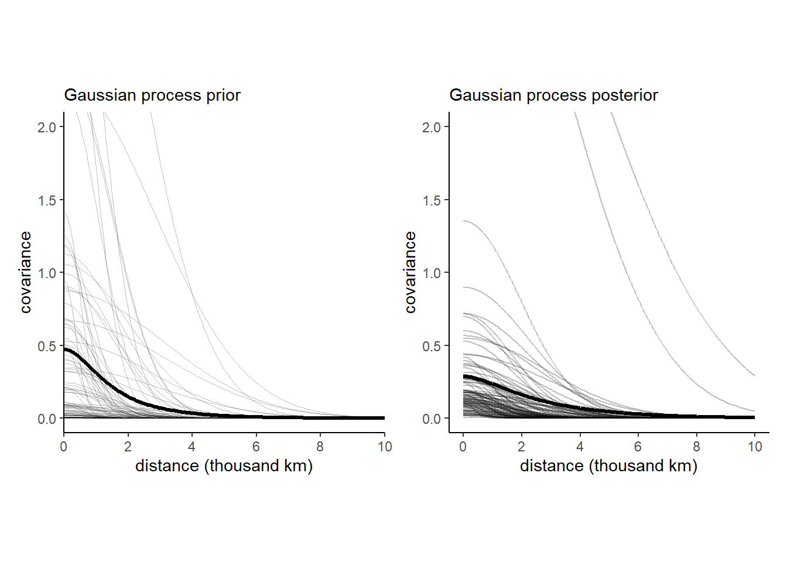
共分散行列の事後推定値は以下のとおりである。
k <- matrix(0, nrow =10, ncol =10)
for(i in 1:10){
for(j in 1:10){
k[i,j] <- median(post$etasq)*exp(-median(post$rhosq)*
islandsDistMatrix[i,j]^2)
diag(k) <- median(post$etasq) + 0.01
}
}
rownames(k) <- rownames(d_mat)
colnames(k) <- colnames(d_mat)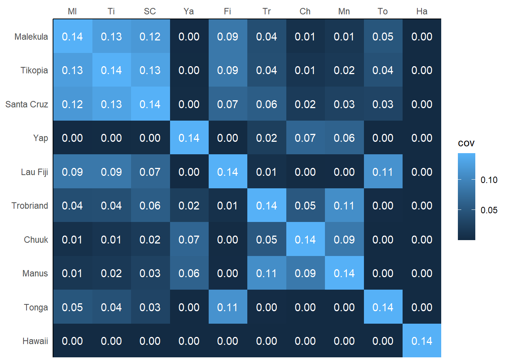
相関行列は以下の通り。行列の左上の小さな社会が強い相関を持っていることが分かる。一方、ハワイ（Ha）は他の地域から離れているのでゼロである。
rho <- round(cov2cor(k),2)
colnames(rho) <- c("Ml", "Ti", "SC", "Ya", "Fi", "Tr", "Ch", "Mn", "To", "Ha")
rownames(rho) <- colnames(rho)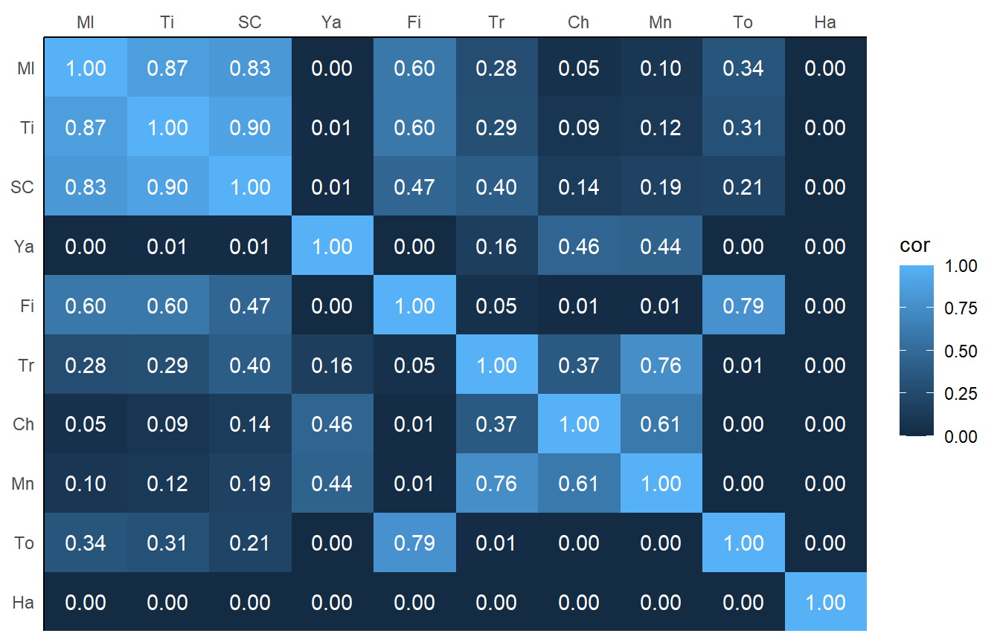
モデルの推定結果を図示したものが以下である。地理的に近い地域ほど事後平均が強く相関しており（A）、道具数も類似していることが読み取れる（B）。 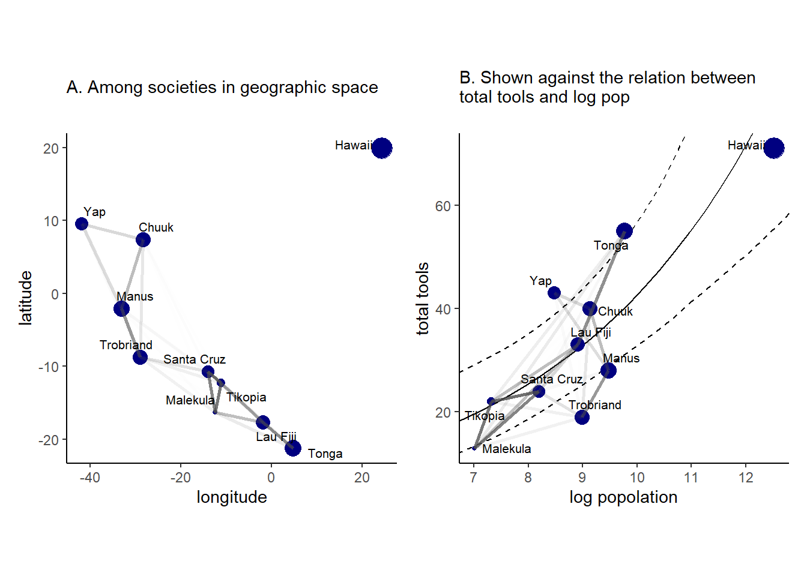
14.5.2 Example: Phylogenetic distance
空間的な距離だけでなく、時間的な距離に対しても同様の分析を施すことができる。例えば、系統上の距離を考慮した分析を施すことで複数の種を含むデータをうまく扱うことができる。系統関係は因果関係に2つの影響を与えうる。
- 最近分岐した種は類似した形質を多く持つ（まだ短時間しか異なる淘汰圧にさらされていないため）。
- 系統的な距離は、種間の共変動を生み出す観測できない要因の代わり（proxy）として用いることができる。例えば、鳥類には空を飛行することに起因する類似の要因が影響を与えている可能性が高い。
集団サイズ(G)と脳容量(B)の関係を考える。社会脳仮説に従えば、集団サイズが大きいほど脳容量も大きいと予測される。この因果関係をDAGで表すと以下のようになる。添字は進化史上の異なる時点を表す。すなわち、\(G_{1}\)と時点1における集団サイズを、\(G_{2}\)は時点2における集団サイズを表す。また、Uは未観測の要因を表す。
しかし、現実的には\(U\)をコントロールできない。また、\(G_{1}\)や\(B_{1}\)も知ることができない。
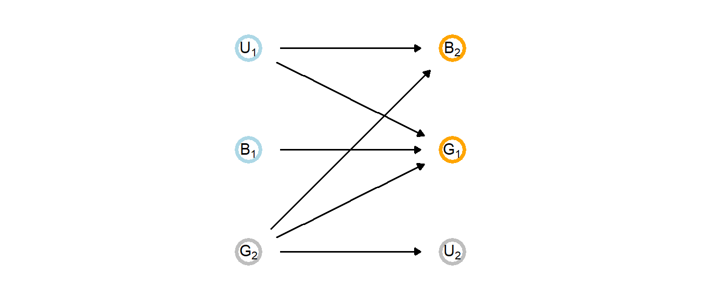
このように観測できない過去の要因の影響を知るために、系統関係を用いることができる。DAGで表すと以下のようになる。Mは体重を示し、集団サイズと脳容量の両方に影響していると考えられる。未観測変数Uはいずれにも影響を与えていると考えられる。また系統的距離PはUに影響していると考えられる。バックドア基準を満たすためには、MとUで条件付けする必要がある。Mは説明変数に加えることで可能である。またUもPを用いてphylogenetic regressionを行うことで統制可能である。
それでは、実際にモデリングを行っていく。霊長類の系統樹を以下に示す。以下の分析では、この系統樹を用いて未観測要因Uをモデリングするとともに、分類群ごとの種数をコントロールする（例えば、キツネザルは他のサルに比べてデータが多いなど）。
data("Primates301")
data("Primates301_nex")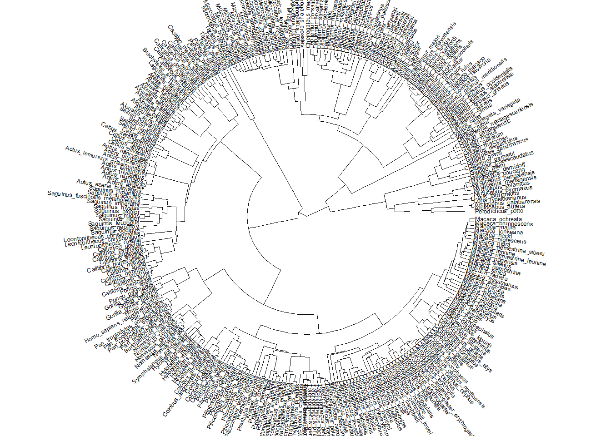
系統関係を考慮したモデリングを行うに、まずはそれを考慮しない以下のモデルを考える。\(\mathbf{S}\)は分散共分散行列を表し、\(\mathbf{I}\)は単位行列である。すなわち、このモデルでは共分散が0であることを想定しているので、通常の回帰分析と同じである。
\[
\begin{aligned}
\mathbf{B} &\sim MVNormal(\mu, \mathbf{S})\\
\mu_{i} &= \alpha + \beta_{G} G_{i} + \beta_{M} M_{i}\\
\mathbf{S} &= \sigma^2\mathbf{I}
\end{aligned}
\]
それでは、モデリングを行う。
d5 <-
Primates301 %>%
mutate(name = as.character(name)) %>%
drop_na(group_size, body, brain) %>%
mutate(m = log(body) %>% standardize(),
b = log(brain) %>% standardize(),
g = log(group_size) %>% standardize())b14.9 <-
brm(data = d5,
family = gaussian,
b ~ 1 + g + m,
prior = c(prior(student_t(3,0,2.5),class = Intercept),
prior(student_t(3,0,2.5), class = b),
prior(exponential(1), class = sigma)),
backend = "cmdstanr",
seed =14, file = "output/Chapter14/b14.9"
)| par | Estimate | Est.Error | Q2.5 | Q97.5 |
|---|---|---|---|---|
| b_Intercept | 0.00 | 0.02 | -0.04 | 0.04 |
| b_g | 0.12 | 0.02 | 0.08 | 0.17 |
| b_m | 0.90 | 0.02 | 0.85 | 0.94 |
| sigma | 0.22 | 0.01 | 0.19 | 0.24 |
| lprior | -6.05 | 0.01 | -6.08 | -6.03 |
それでは、以下では2種類のphylogenetic regressionを行う。どちらのモデルでも、先ほどのモデルの分散共分散行列\(\mathbf{S}\)を系統的距離に基づいて変えるだけである。
1つ目のモデルは、ブラウン運動（正規分布のランダムウォーク）に基づいて系統樹を解釈する。この方法では、種間の共分散が系統的距離に比例して小さくなることを仮定する。実際は、系統樹の異なる場所では進化速度が異なるはずだが、それについては考慮しない。Rではapeパッケージを用いることで系統的距離を算出できる。
library(ape)
spp_obs <- d5$name
d6 <- Primates301_nex
tree_trimmed <- keep.tip(d6, spp_obs)
Rbm <- corBrownian(phy = tree_trimmed)
V <- vcv(Rbm)
Dmat <- cophenetic(tree_trimmed)以下の図から、共分散は距離の逆数であることが分かる。 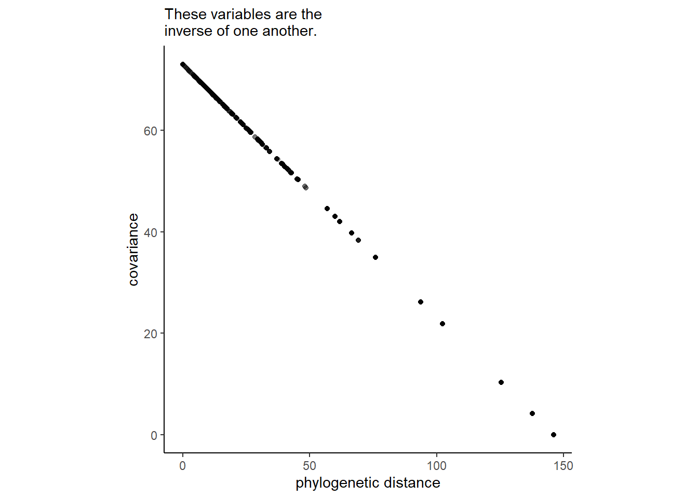
それでは、モデリングを行う。brmsパッケージでは、fcor()で既知の共分散行列をモデルに組み込む。
## 相関行列に変換
R <- V[spp_obs, spp_obs]/max(V)
## モデリング
b14.10 <-
brm(data = d5,
data2 = list(R=R),
family = gaussian,
b ~ 1 + m + g + fcor(R),
prior = c(prior(student_t(3,0,2.5),class = Intercept),
prior(student_t(3,0,2.5), class = b),
prior(exponential(1), class = sigma)),
backend = "cmdstanr",
seed =14, file = "output/Chapter14/b14.10")| par | Estimate | Est.Error | Q2.5 | Q97.5 |
|---|---|---|---|---|
| b_Intercept | -0.20 | 0.17 | -0.52 | 0.13 |
| b_m | 0.70 | 0.04 | 0.63 | 0.77 |
| b_g | -0.01 | 0.02 | -0.05 | 0.03 |
| sigma | 0.40 | 0.02 | 0.36 | 0.45 |
| lprior | -6.21 | 0.03 | -6.26 | -6.17 |
ブラウン運動モデルは、ガウス過程の特殊例である。ブラウン運動モデルを改良するため、Ornstein-Uhlenbeck Process（OU process）が用いられることがある。このモデルでは、系統的距離と共分散の間に以下のような非線形な関係を想定する。
\[
K_{i,j} = \eta^2 exp(-\rho^2 D_{ij})
\]
前節のオセアニアの道具モデルと違う点は、距離が二乗されていないことである。OU processもガウス過程の一種である。現在brmsではOU過程をサポートしていないので、rethinkingパッケージでモデリングを行う。
dat_list <-
list(
N_spp = nrow(d5),
M = standardize(log(d5$body)),
B = standardize(log(d5$brain)),
G = standardize(log(d5$group_size)),
Imat = diag(nrow(d5)),
V = V[spp_obs, spp_obs],
R = V[spp_obs, spp_obs] / max(V[spp_obs, spp_obs]),
Dmat = Dmat[spp_obs, spp_obs] / max(Dmat)
)
m14.11 <-
ulam(
alist(
B ~ multi_normal(mu, SIGMA),
mu <- a + bM * M + bG * G,
matrix[N_spp,N_spp]: SIGMA <- cov_GPL1(Dmat, etasq, rhosq, 0.01),
a ~ normal(0, 1),
c(bM,bG) ~ normal(0, 0.5),
etasq ~ half_normal(1, 0.25),
rhosq ~ half_normal(3, 0.25)
),
data = dat_list,
chains = 4, cores = 4)結果は以下の通り（表14.10）。集団サイズは小さいながらも、脳容量に影響を与えていることが分かる。
precis(m14.11) %>%
data.frame() %>%
rownames_to_column(var = "par") %>%
kable(digits = 2,
booktabs = TRUE,
caption = "b14.11の結果。") %>%
kable_styling(latex_options = c("striped", "hold_position"))| par | mean | sd | X5.5. | X94.5. | n_eff | Rhat4 |
|---|---|---|---|---|---|---|
| a | -0.06 | 0.08 | -0.19 | 0.06 | 1809.88 | 1 |
| bG | 0.05 | 0.02 | 0.01 | 0.09 | 1839.62 | 1 |
| bM | 0.83 | 0.03 | 0.79 | 0.88 | 1473.26 | 1 |
| etasq | 0.04 | 0.01 | 0.03 | 0.05 | 2057.37 | 1 |
| rhosq | 2.80 | 0.23 | 2.42 | 3.18 | 2084.41 | 1 |
\(K_{ij}\)の事前分布と事後分布を描いたのが下図である。推定結果から、いずれの系統的距離においても種間のばらつきが小さいことが分かる。 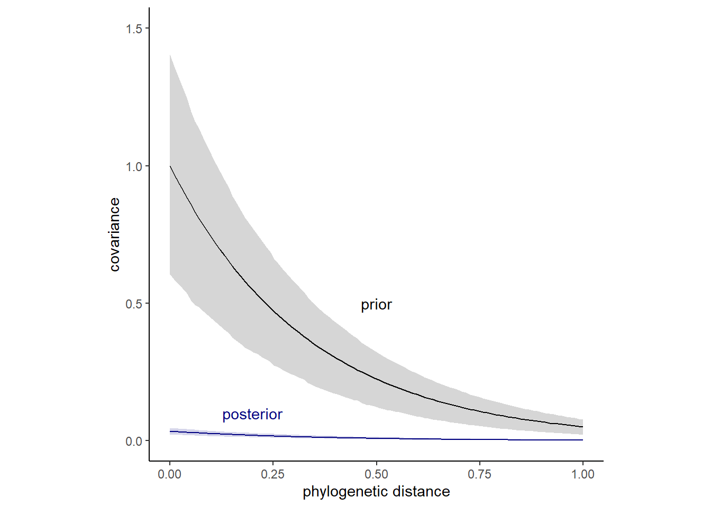
14.6 Practice
14.6.1 14M1
Repeat the café robot simulation from the beginning of the chapter. This time, set rho to zero, so that there is no correlation between intercepts and slopes. How does the posterior distribution of the correlation reflect this change in the underlying simulation?
本章冒頭のロボットの例で、ランダム切片とランダム傾きの間の相関をゼロにしてみる。
a <- 3.5 # averange morning wait time
b <- (-1) # average difference afternoon wait time
sigma_a <- 1 # std dev in intercepts
sigma_b <- 0.5 # std dev in slopes
rho <- 0 # correlation between interecpts and slopes
mu <- c(a,b)
cov_ab <- sigma_a*sigma_b*rho #共分散
sigma <- matrix(c(sigma_a^2, cov_ab,
cov_ab, sigma_b^2), ncol=2) # 分散共分散行列n_cafes <- 20
set.seed(5)
vary_effects <-
MASS::mvrnorm(n_cafes, mu, sigma) %>%
data.frame() %>%
set_names("a_cafe", "b_cafe")
n_visits <- 10
sigma_y <- 0.5
set.seed(22)
dat <-
vary_effects %>%
mutate(cafe = 1:n()) %>%
tidyr::expand(nesting(cafe, a_cafe, b_cafe),
visits = 1:n_visits) %>%
mutate(afternoon = rep(0:1, times = n()/2)) %>%
mutate(mu = a_cafe + b_cafe*afternoon) %>%
mutate(wait = rnorm(n=n(), mean=mu, sd=sigma_y))それでは、モデリングを行う。
b14M1 <-
brm(data =dat,
family = gaussian,
wait ~ 1 + afternoon + (1+afternoon|cafe),
prior = c(prior(normal(5,2), class = Intercept),
prior(normal(-1,0.5), class = b),
prior(exponential(1), class = sigma),
prior(exponential(1), class =sd),
prior(lkj(2), class = cor)),
backend = "cmdstanr",
seed = 155, file = "output/Chapter14/b14M1")推定値もほとんどゼロになる。
posterior_summary(b14M1) %>%
data.frame() %>%
rownames_to_column(var = "par") %>%
filter(str_detect(par,"cor")) %>%
kable(digits = 2,
booktabs = TRUE) %>%
kable_styling(latex_options = c("striped", "hold_position"))| par | Estimate | Est.Error | Q2.5 | Q97.5 |
|---|---|---|---|---|
| cor_cafe__Intercept__afternoon | -0.04 | 0.22 | -0.45 | 0.38 |
14.6.2 14M2
Fit this multilevel model to the simulated café data:
\[ \begin{aligned} W_{i} &\sim Normal(\mu_{i}, \sigma)\\ \mu_{i} &= \alpha_{cafe[i]} + \beta_{cafe[i]}A_{i}\\ \alpha_{cafe} &\sim Normal(\alpha, \sigma_{\alpha}) \\ \beta_{cafe} &\sim Normal(\beta, \sigma_{\beta})\\ \alpha &\sim Normal(0,10)\\ \beta &\sim Normal(0,10)\\ \sigma &\sim HalfCauchy(0,1)\\ \sigma_{\alpha} &\sim HalfCauchy(0,1)\\ \sigma_{\beta} &\sim HalfCauchy(0,1)\\ \end{aligned} \]
Use WAIC to compare this model to the model from the chapter, the one that uses a multi-variate Gaussian prior. Explain the result.
本章冒頭のシミュレーションデータで、ランダム切片とランダム傾きの間に相関を仮定しない（それぞれが独立に得られる）モデルを考える。brmsでは、(1+afternoon||cafe)のように書くことで、ランダム切片とランダム傾きの相関を考慮しないモデルを作れる。
b14M2 <-
brm(data =d,
family = gaussian,
wait ~ 1 + afternoon + (1+afternoon||cafe),
prior = c(prior(normal(0,10), class = Intercept),
prior(normal(0,10), class = b),
prior(exponential(1), class = sigma),
prior(exponential(1), class =sd)),
backend = "cmdstanr",
seed = 155, file = "output/Chapter14/b14M2") b14.1の結果と比較してみる。推定結果に大きな違いはなさそう。| par | Estimate | Est.Error | Q2.5 | Q97.5 |
|---|---|---|---|---|
| b_Intercept | 3.65 | 0.22 | 3.23 | 4.07 |
| b_afternoon | -1.13 | 0.14 | -1.41 | -0.86 |
| sd_cafe__Intercept | 0.96 | 0.17 | 0.69 | 1.36 |
| sd_cafe__afternoon | 0.60 | 0.13 | 0.38 | 0.88 |
| cor_cafe__Intercept__afternoon | -0.50 | 0.18 | -0.80 | -0.08 |
| sigma | 0.47 | 0.03 | 0.42 | 0.53 |
| lprior | -5.07 | 0.44 | -6.09 | -4.38 |
| par | Estimate | Est.Error | Q2.5 | Q97.5 |
|---|---|---|---|---|
| b_Intercept | 3.64 | 0.21 | 3.22 | 4.06 |
| b_afternoon | -1.13 | 0.15 | -1.43 | -0.85 |
| sd_cafe__Intercept | 0.94 | 0.16 | 0.68 | 1.31 |
| sd_cafe__afternoon | 0.57 | 0.13 | 0.36 | 0.86 |
| sigma | 0.48 | 0.03 | 0.43 | 0.53 |
| lprior | -8.48 | 0.22 | -8.97 | -8.11 |
図示してみると、結果は類似している。しかし、切片と傾きの相関はb14.1では-0.62、b14M2では-0.52で、相関を仮定したモデルの方が高いことが分かる。
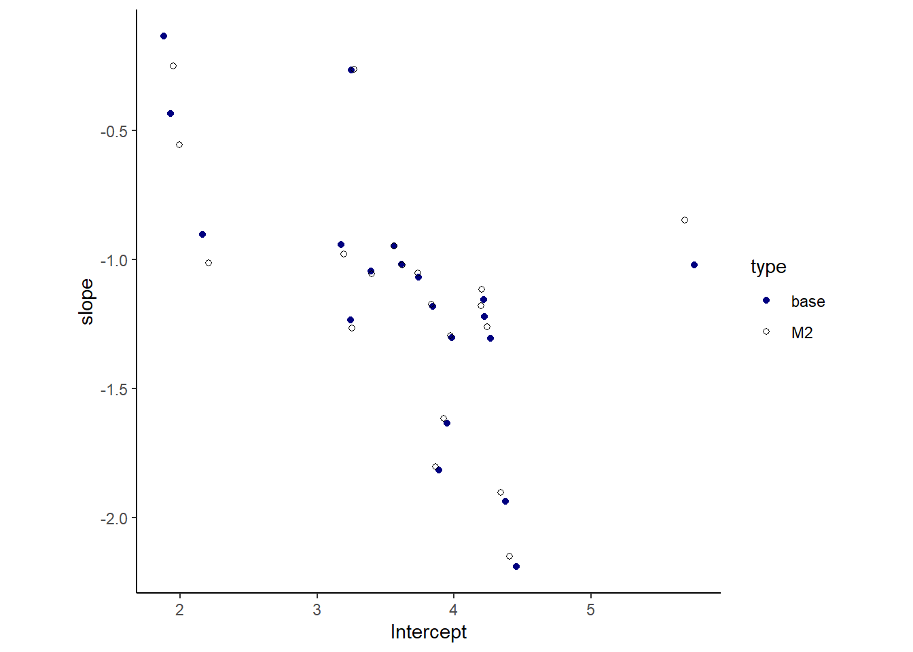
14.4 Social relations as correlated varying effects
ニカラグアの家庭間での贈り物の交換に関するデータを扱う(Koster and Leckie 2014)。
下図は、家庭AとBの間の贈り物の数をプロットしたもの。相関は0.24と高くないが、それだけで家庭間の交換でバランスが取れていないと判断するべきではない。なぜなら、他家庭に送るプレゼントの量は各家庭の経済状況などに依存するため、これらの影響を切り離す必要があるからである。
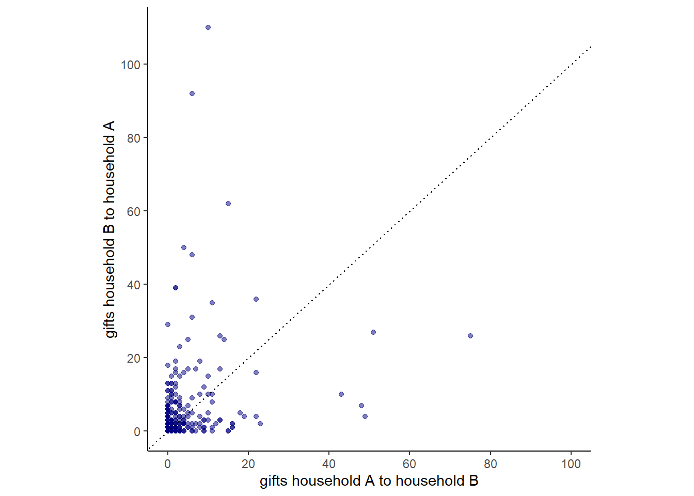
そこで、以下のモデルを考える。なお、\(g_{A}\)は家庭Aの贈り物を送る傾向を表すランダム効果、\(r_B\)は家庭Bが贈り物を受ける傾向を示すランダム効果、\(d_{AB}\)は各ダイアッド間での贈り物の量のばらつきを表すランダム効果である。 \[ \begin{aligned} y_{A\to B} &\sim Poisson(\lambda_{AB})\\ log\lambda_{AB} &= \alpha + g_{A} + r_{B} + d_{AB}\\ \end{aligned} \]
家庭Bに対する贈り物についても同様。
\[ \begin{aligned} y_{B\to A} &\sim Poisson(\lambda_{BA})\\ log\lambda_{BA} &= \alpha + g_{B} + r_{A} + d_{BA}\\ \end{aligned} \]
また、\(g\)と\(r\)、\(d_{AB}\)と\(d_{BA}\)の間には相関があると想定できるので、以下のようにモデリングする。
\[ \begin{aligned} \begin{pmatrix} g_{i}\\r_{i} \end{pmatrix} &\sim MVNormal \begin{pmatrix} \begin{pmatrix} 0\\0 \end{pmatrix}, \begin{pmatrix} \sigma^2_{g} & \sigma_{g}\sigma_{r}\rho_{gr}\\ \sigma_{g}\sigma_{r}\rho_{gr} & \sigma^2_{r} \end{pmatrix} \end{pmatrix}\\ \begin{pmatrix} d_{ij}\\d_{ji} \end{pmatrix} &\sim MVNormal \begin{pmatrix} \begin{pmatrix} 0\\0 \end{pmatrix}, \begin{pmatrix} \sigma^2_{d} & \sigma^2_{d}\rho_{d}\\ \sigma^2_{d}\rho_{d} & \sigma^2_{d} \end{pmatrix} \end{pmatrix} \end{aligned} \]
それでは、モデリングを行う。
brmsパッケージではこのモデルを記述できないため、ここではrethinkingパッケージを用いる。各家庭の事後平均を示したのが下図である。楕円は、50%信用区間を表す。
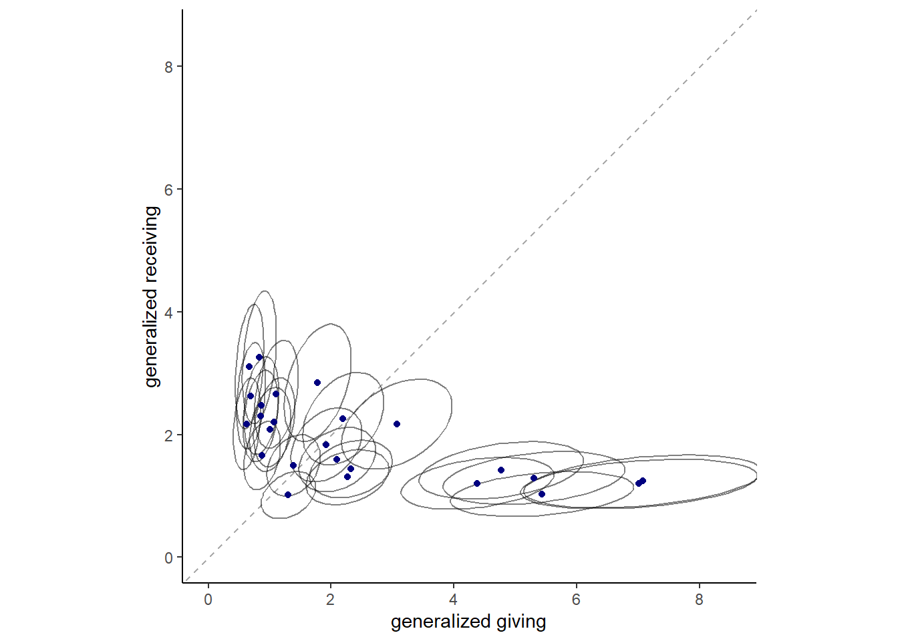
\(\sigma^2_{d}\)と\(\rho_{d}\)の推定値は以下の通り（表14.6）。
下図は、事後平均をプロットしたものである。\(d_{ij}\)と\(d_{ji}\)の間には強い相関があることが分かる。すなわち、家庭間の贈与量はバランスが取れている（家庭AがBにあげる量が少なければ、BがAにあげる量も少ない）。また、ダイアッド間でばらつきが大きいことも分かる。この結果は、互恵性が成立していることを示している。
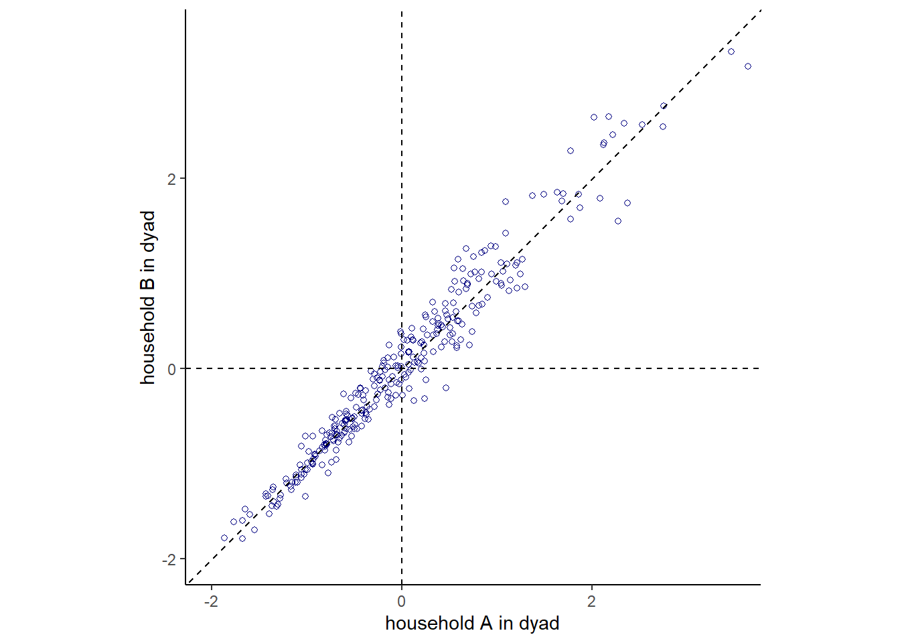